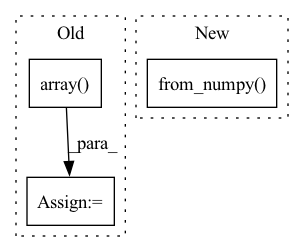

Pattern ID :31973
Before Change
f"{tile_name}_{date}",
f"{band_name}.tif",
)
band_img = np.array( Image.open(img_fn))
img[band_index] = band_img
return img
After Change
)
with Image.open(filepath) as band_img:
array = np.array(band_img)
img[band_index] = torch.from_numpy( array) // type: ignore[attr-defined]
return img
In pattern: SUPERPATTERN
Frequency: 3
Non-data size: 3
Instances Fragment ID: 93444434
Project Name: microsoft/torchgeo
Commit Name: e48f7ed0e975d0543bc80d637185b13f62f1eb6c
Time: 2021-06-16
Author: ajstewart426@gmail.com
File Name: torchgeo/datasets/cv4a_kenya_crop_type.py
M Class Name: CV4AKenyaCropType
N Class Name: CV4AKenyaCropType
M Method Name: _load_single_image_tile(4)
N Method Name: _load_single_image_tile(4)
M Parent Class: VisionDataset
N Parent Class: GeoDataset
M File Name: torchgeo/datasets/cv4a_kenya_crop_type.py
N File Name: torchgeo/datasets/cv4a_kenya_crop_type.py
M Start Line: 321
M End Line: 332
N Start Line: 319
N End Line: 333
Before Change
if is_tensor:
inds = dets.new_tensor(inds, dtype=torch.long)
else:
inds = np.array( inds, dtype=np.int64)
return dets[inds, :], inds
def soft_nms(dets, iou_thr, method="linear", sigma=0.5, min_score=1e-3):After Change
elif isinstance(dets, np.ndarray):
is_numpy = True
device = "cpu" if device_id is None else "cuda:{}".format(device_id)
dets_th = torch.from_numpy( dets) .to(device)
else:
raise TypeError(
"dets must be either a Tensor or numpy array, but got {}".format( Fragment ID: 93444436
Project Name: wxinlong/solo
Commit Name: e421e832883241bd7831bf77dc31d5fb31d7da58
Time: 2019-04-06
Author: chenkaidev@gmail.com
File Name: mmdet/ops/nms/nms_wrapper.py
M Class Name: AnonimousClass
N Class Name: AnonimousClass
M Method Name: nms(3)
N Method Name: nms(3)
M Parent Class:
N Parent Class:
M File Name: mmdet/ops/nms/nms_wrapper.py
N File Name: mmdet/ops/nms/nms_wrapper.py
M Start Line: 11
M End Line: 33
N Start Line: 26
N End Line: 49
Before Change
// Assume that the person is centerered in the image
height = img_for_crop.shape[0]
width = img_for_crop.shape[1]
center = np.array( [width // 2, height // 2])
scale = max(height, width) / 180
if hps_type == "hybrik":After Change
detector = detection.maskrcnn_resnet50_fpn(pretrained=True)
detector.eval()
predictions = detector(
[torch.from_numpy( img_for_crop) .permute(2, 0, 1) / 255.])[0]
human_ids = torch.logical_and(
predictions["labels"] == 1,
predictions["scores"] == predictions["scores"].max()).nonzero().squeeze(1) Fragment ID: 93444428
Project Name: yuliangxiu/icon
Commit Name: 2117636e701293c457554812067b272fcf3f8252
Time: 2022-10-10
Author: yuliang.xiu@tuebingen.mpg.de
File Name: lib/pymaf/utils/imutils.py
M Class Name: AnonimousClass
N Class Name: AnonimousClass
M Method Name: process_image(5)
N Method Name: process_image(6)
M Parent Class:
N Parent Class:
M File Name: lib/pymaf/utils/imutils.py
N File Name: lib/pymaf/utils/imutils.py
M Start Line: 91
M End Line: 132
N Start Line: 111
N End Line: 128